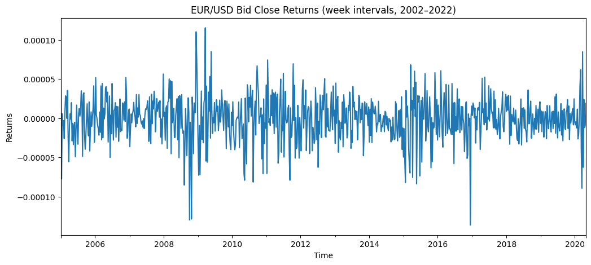
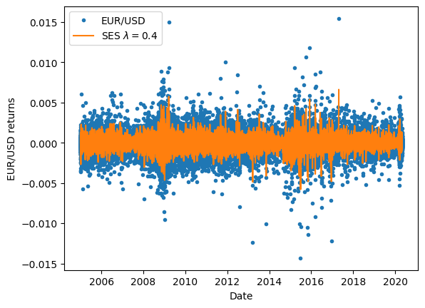
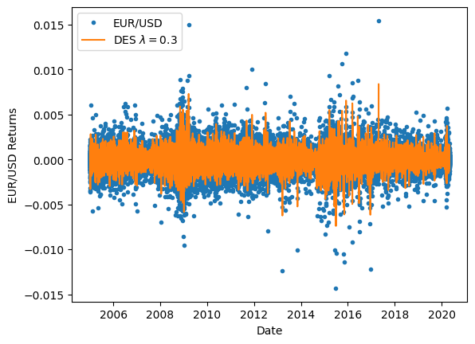
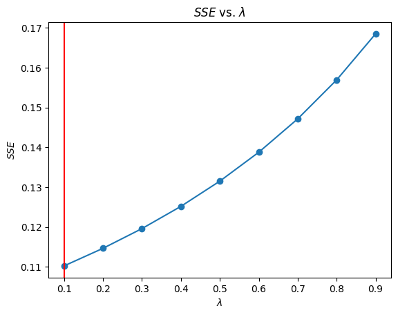

Modelo de suavización exponencial#
from IPython.display import display, Markdown
from IPython import get_ipython
FUENTE = "Fuente: OANDA Brokerage (Kaggle; Imetomi, 2021); elaboración propia."
def agregar_fuente_post_celda(result):
# Mostrar SIEMPRE (más estable)
display(Markdown(f"<sub>{FUENTE}</sub>"))
ip = get_ipython()
# limpiar registros anteriores
try:
while True:
ip.events.unregister("post_run_cell", agregar_fuente_post_celda)
except:
pass
ip.events.register("post_run_cell", agregar_fuente_post_celda)
Fuente: OANDA Brokerage (Kaggle; Imetomi, 2021); elaboración propia.
Implementación SES#
import warnings
warnings.filterwarnings('ignore')
import kagglehub
import os
# Download latest version
path = kagglehub.dataset_download("imetomi/eur-usd-forex-pair-historical-data-2002-2019")
print("Path to dataset files:", path)
Warning: Looks like you're using an outdated `kagglehub` version (installed: 0.3.13), please consider upgrading to the latest version (1.0.0).
Path to dataset files: C:\Users\planeacion\.cache\kagglehub\datasets\imetomi\eur-usd-forex-pair-historical-data-2002-2019\versions\2
Fuente: OANDA Brokerage (Kaggle; Imetomi, 2021); elaboración propia.
for file in os.listdir(path):
print(file)
import pandas as pd
import numpy as np
import seaborn as sns
from matplotlib import pyplot as plt
df = pd.read_csv(os.path.join(path, "eurusd_minute.csv"))
# Combinar Date y Time para la el horario exacto
df_time = df.copy()
if 'Date' in df_time.columns and 'Time' in df_time.columns:
df_time['Datetime'] = pd.to_datetime(df_time['Date'] + ' ' + df_time['Time'])
df_time = df_time.set_index('Datetime')
df_time = df_time.drop(columns=['Date', 'Time'])
df_time = df_time.sort_index()
print(df_time.head())
print(df_time.shape)
eurusd_hour.csv
eurusd_minute.csv
eurusd_news.csv
BO BH BL BC BCh AO AH \
Datetime
2005-01-02 18:29:00 1.3555 1.3555 1.3555 1.3555 0.0 1.3565 1.3565
2005-01-02 18:38:00 1.3555 1.3555 1.3555 1.3555 0.0 1.3565 1.3565
2005-01-02 18:51:00 1.3562 1.3562 1.3562 1.3562 0.0 1.3572 1.3572
2005-01-02 18:52:00 1.3560 1.3560 1.3560 1.3560 0.0 1.3570 1.3570
2005-01-02 18:55:00 1.3563 1.3563 1.3563 1.3563 0.0 1.3573 1.3573
AL AC ACh
Datetime
2005-01-02 18:29:00 1.3565 1.3565 0.0
2005-01-02 18:38:00 1.3565 1.3565 0.0
2005-01-02 18:51:00 1.3572 1.3572 0.0
2005-01-02 18:52:00 1.3570 1.3570 0.0
2005-01-02 18:55:00 1.3573 1.3573 0.0
(5618819, 10)
Fuente: OANDA Brokerage (Kaggle; Imetomi, 2021); elaboración propia.
df_15m = df_time.resample('15min').median().dropna()
df_15m['Retorno'] = df_15m['BC'] / df_15m['BC'].shift(1) - 1
df_15m = df_15m.dropna()
Fuente: OANDA Brokerage (Kaggle; Imetomi, 2021); elaboración propia.
Usamos retornos simples en lugar de log-retornos cuando buscamos una transformación fácil de interpretar (+2%, −1%) y suficiente para estabilizar la serie antes de aplicar suavizamiento exponencial, especialmente en datos de alta frecuencia donde la diferencia con los log-retornos es mínima. Además, los retornos simples simplifican el flujo de trabajo porque no requieren transformar y revertir valores, mientras que el suavizamiento exponencial no necesita las propiedades teóricas adicionales de los log-retornos (como la aditividad o mejor comportamiento estadístico), que son más relevantes en modelos econométricos formales como GARCH o ARIMA.
djia_ts = df_15m['Retorno']
djia_ts.head()
Datetime
2005-01-02 18:30:00 0.000000
2005-01-02 18:45:00 0.000516
2005-01-02 19:00:00 0.000147
2005-01-02 19:15:00 -0.000405
2005-01-02 19:30:00 -0.000406
Name: Retorno, dtype: float64
Fuente: OANDA Brokerage (Kaggle; Imetomi, 2021); elaboración propia.
df_15m = df_time.resample('15min').median().dropna()
df_15m['Retorno'] = df_15m['BC'] / df_15m['BC'].shift(1) - 1
df_15m = df_15m.dropna()
Fuente: OANDA Brokerage (Kaggle; Imetomi, 2021); elaboración propia.
djia_ts = df_15m['Retorno']
djia_ts.head()
Datetime
2005-01-02 18:30:00 0.000000
2005-01-02 18:45:00 0.000516
2005-01-02 19:00:00 0.000147
2005-01-02 19:15:00 -0.000405
2005-01-02 19:30:00 -0.000406
Name: Retorno, dtype: float64
Fuente: OANDA Brokerage (Kaggle; Imetomi, 2021); elaboración propia.
Remuestreamos la serie a intervalos de 15 minutos (resample('15min')) para reducir la granularidad y el tamaño de la base de datos, agregando múltiples observaciones en un solo punto representativo (en este caso, la mediana). Esto tiene varias ventajas: disminuye el ruido de alta frecuencia (fluctuaciones muy pequeñas o erráticas), hace la serie más manejable computacionalmente, y permite trabajar con patrones más claros y estables en el tiempo. En otras palabras, sacrificas detalle muy fino para ganar claridad analítica y eficiencia en el procesamiento.
df_plot = df_15m['Retorno'].resample('W').mean()
df_plot.plot(title="EUR/USD Bid Close Returns (week intervals, 2002–2022)",
figsize=(12, 5),
ylabel="Returns",
xlabel="Time")
plt.show()

Fuente: OANDA Brokerage (Kaggle; Imetomi, 2021); elaboración propia.
La serie muestra retornos semanales del EUR/USD centrados alrededor de cero, lo que indica ausencia de tendencia sistemática en los retornos (comportamiento típico de mercados eficientes). Se observan picos de alta volatilidad en ciertos periodos, especialmente alrededor de 2008–2009 y algunos episodios posteriores, lo que sugiere clusters de volatilidad (periodos tranquilos seguidos de periodos turbulentos). Además, hay outliers (movimientos extremos), reflejando choques o eventos económicos relevantes. En conjunto, es una serie estacionaria en media pero heterocedástica, característica común en datos financieros.
def firstsmooth(y, lambda_, start=None):
ytilde = y.copy()
if start is None:
start = y[0]
ytilde[0] = lambda_ * y[0] + (1 - lambda_) * start
for i in range(1, len(y)):
ytilde[i] = lambda_ * y[i] + (1 - lambda_) * ytilde[i - 1]
return ytilde
Fuente: OANDA Brokerage (Kaggle; Imetomi, 2021); elaboración propia.
dji_smooth1 = firstsmooth(y=djia_ts, lambda_=0.4)
Fuente: OANDA Brokerage (Kaggle; Imetomi, 2021); elaboración propia.
plt.plot(djia_ts, marker='o', linestyle='', markersize=3, label='EUR/USD')
plt.plot(dji_smooth1, label='SES $\lambda=0.4$')
plt.xlabel('Date')
plt.ylabel('EUR/USD returns')
plt.legend()
plt.show()

Fuente: OANDA Brokerage (Kaggle; Imetomi, 2021); elaboración propia.
El gráfico muestra los retornos del EUR/USD (puntos azules) junto con el suavizamiento exponencial simple con λ = 0.4 (línea naranja). Se observa que el modelo logra capturar el nivel promedio de la serie, manteniéndose cerca de cero, pero no sigue los picos extremos ni la alta variabilidad, especialmente en periodos de mayor volatilidad como 2008–2009 y 2015–2017. Esto es esperado, ya que el suavizamiento exponencial tiende a “filtrar” el ruido y producir una serie más estable. En resumen, el modelo es útil para identificar la tendencia central, pero no para predecir shocks o movimientos bruscos en los retornos.
def measacc_fs(y, lambda_):
out = firstsmooth(y, lambda_)
T = len(y)
yh = y.copy().values
out = pd.concat([pd.Series([y[0]]), out.iloc[:-1]], ignore_index=True).values
prederr = yh - out
SSE = sum(prederr**2)
RMSE = np.sqrt(sum(prederr**2) / T) # Usamos RMSE dado que en este tipo de series, lo valores cercanos a 0 son comunes
MAD = sum(abs(prederr)) / T
MSD = sum(prederr**2) / T
ret1 = pd.DataFrame({
"SSE": [SSE],
"RMSE": [RMSE],
"MAD": [MAD],
"MSD": [MSD]
})
ret1.reset_index(drop=True, inplace=True)
return ret1
Fuente: OANDA Brokerage (Kaggle; Imetomi, 2021); elaboración propia.
measacc_fs(djia_ts, 0.4)
| SSE | RMSE | MAD | MSD | |
|---|---|---|---|---|
| 0 | 0.125207 | 0.000569 | 0.000364 | 3.243150e-07 |
Fuente: OANDA Brokerage (Kaggle; Imetomi, 2021); elaboración propia.
Las métricas indican que el modelo de suavizamiento exponencial tiene un ajuste razonable pero limitado para esta serie. El RMSE (0.000569) y el MAD (0.000364) son relativamente bajos, lo que sugiere que, en promedio, los errores de predicción son pequeños, algo esperable en retornos que están muy cerca de cero. Sin embargo, el SSE acumulado (0.125) refleja que, a lo largo de toda la serie, los errores sí se suman, principalmente por los picos de volatilidad que el modelo no captura bien. El MSD (3.24e-07) confirma que la varianza del error es baja, pero esto puede ser engañoso en series financieras, donde muchos errores pequeños esconden pocos errores grandes. En conjunto, el modelo funciona bien para aproximar el comportamiento promedio, pero no es adecuado para capturar eventos extremos o cambios bruscos en la volatilidad.
from statsmodels.tsa.holtwinters import ExponentialSmoothing
Fuente: OANDA Brokerage (Kaggle; Imetomi, 2021); elaboración propia.
def measacc_hw(y, lambda_):
model = ExponentialSmoothing(y.values)
fit = model.fit(smoothing_level=lambda_)
T = len(y)
yh = y.copy().values
y_pred = pd.Series(data=fit.fittedvalues, index=y.index)
out = pd.concat([pd.Series([y[0]]), y_pred[:-1]], ignore_index=True).values
prederr = yh - out
SSE = sum(prederr**2)
RMSE = np.sqrt(sum(prederr**2) / T)
MAD = sum(abs(prederr)) / T
MSD = sum(prederr**2) / T
ret1 = pd.DataFrame({
"SSE": [SSE],
"RMSE": [RMSE],
"MAD": [MAD],
"MSD": [MSD]
})
ret1.reset_index(drop=True, inplace=True)
return ret1
Fuente: OANDA Brokerage (Kaggle; Imetomi, 2021); elaboración propia.
measacc_hw(djia_ts, 0.4)
| SSE | RMSE | MAD | MSD | |
|---|---|---|---|---|
| 0 | 0.137167 | 0.000596 | 0.000382 | 3.552954e-07 |
Fuente: OANDA Brokerage (Kaggle; Imetomi, 2021); elaboración propia.
Comparado con el resultado anterior, este modelo tiene un desempeño ligeramente peor. El SSE aumenta (de 0.125 a 0.137), lo que indica mayor error acumulado, y tanto el RMSE (0.000596) como el MAD (0.000382) también son más altos, señalando que en promedio las predicciones se alejan un poco más de los valores reales. El MSD igualmente sube, lo que refleja una mayor varianza del error.
En términos prácticos, este cambio sugiere que el valor de λ usado aquí no está ajustando tan bien la serie como el anterior. Aunque la diferencia no es enorme (lo cual es común en retornos financieros), sí indica que el modelo previo tenía un mejor balance entre suavizamiento y capacidad de reacción a los datos.
Implementación DES#
import matplotlib.pyplot as plt
Fuente: OANDA Brokerage (Kaggle; Imetomi, 2021); elaboración propia.
cpi_smooth1 = firstsmooth(y=djia_ts, lambda_=0.3)
cpi_smooth2 = firstsmooth(y=cpi_smooth1, lambda_=0.3)
Fuente: OANDA Brokerage (Kaggle; Imetomi, 2021); elaboración propia.
cpi_hat = 2 * cpi_smooth1 - cpi_smooth2
Fuente: OANDA Brokerage (Kaggle; Imetomi, 2021); elaboración propia.
plt.plot(djia_ts, marker='o', linestyle='', markersize=3, label='EUR/USD')
plt.plot(cpi_hat, label='DES $\lambda=0.3$')
plt.xlabel('Date')
plt.ylabel('EUR/USD Returns')
plt.legend()
plt.show()

Fuente: OANDA Brokerage (Kaggle; Imetomi, 2021); elaboración propia.
El gráfico muestra los retornos del EUR/USD con un suavizamiento exponencial doble (DES, λ = 0.3). La línea suavizada se mantiene cercana a cero y sigue el comportamiento promedio de la serie, pero no logra capturar los picos extremos ni los periodos de alta volatilidad. Además, en ciertos tramos introduce pequeñas oscilaciones adicionales sin que exista una tendencia clara en los datos. En conjunto, la línea suavizada no aporta una mejora evidente en el ajuste visual frente a un suavizamiento más simple, ya que la serie no presenta una estructura de tendencia marcada.
Forecasting#
import numpy as np
import matplotlib.pyplot as plt
Fuente: OANDA Brokerage (Kaggle; Imetomi, 2021); elaboración propia.
lambda_vec = np.arange(0.1, 1.0, 0.1)
Fuente: OANDA Brokerage (Kaggle; Imetomi, 2021); elaboración propia.
En el contexto de suavización exponencial, defines lambda_vec = np.arange(0.1, 1.0, 0.1) para probar distintos valores del parámetro λ (que controla cuánto peso le das a los datos más recientes frente a los anteriores).
def sse_speed(sc):
return measacc_fs(djia_ts, sc)['SSE'].values[0]
Fuente: OANDA Brokerage (Kaggle; Imetomi, 2021); elaboración propia.
sse_vec = pd.Series()
for lambda_ in lambda_vec:
sse_vec.loc[len(sse_vec)] = sse_speed(lambda_)
---------------------------------------------------------------------------
KeyboardInterrupt Traceback (most recent call last)
Cell In[24], line 3
1 sse_vec = pd.Series()
2 for lambda_ in lambda_vec:
----> 3 sse_vec.loc[len(sse_vec)] = sse_speed(lambda_)
Cell In[23], line 2, in sse_speed(sc)
1 def sse_speed(sc):
----> 2 return measacc_fs(djia_ts, sc)['SSE'].values[0]
Cell In[12], line 2, in measacc_fs(y, lambda_)
1 def measacc_fs(y, lambda_):
----> 2 out = firstsmooth(y, lambda_)
3 T = len(y)
4 yh = y.copy().values
Cell In[9], line 7, in firstsmooth(y, lambda_, start)
5 ytilde[0] = lambda_ * y[0] + (1 - lambda_) * start
6 for i in range(1, len(y)):
----> 7 ytilde[i] = lambda_ * y[i] + (1 - lambda_) * ytilde[i - 1]
8 return ytilde
File ~\miniconda3\envs\ml_venv\lib\site-packages\pandas\core\series.py:1128, in Series.__getitem__(self, key)
1118 key = unpack_1tuple(key)
1120 if is_integer(key) and self.index._should_fallback_to_positional:
1121 warnings.warn(
1122 # GH#50617
1123 "Series.__getitem__ treating keys as positions is deprecated. "
1124 "In a future version, integer keys will always be treated "
1125 "as labels (consistent with DataFrame behavior). To access "
1126 "a value by position, use `ser.iloc[pos]`",
1127 FutureWarning,
-> 1128 stacklevel=find_stack_level(),
1129 )
1130 return self._values[key]
1132 elif key_is_scalar:
File ~\miniconda3\envs\ml_venv\lib\site-packages\pandas\util\_exceptions.py:43, in find_stack_level()
40 import pandas as pd
42 pkg_dir = os.path.dirname(pd.__file__)
---> 43 test_dir = os.path.join(pkg_dir, "tests")
45 # https://stackoverflow.com/questions/17407119/python-inspect-stack-is-slow
46 frame: FrameType | None = inspect.currentframe()
File ~\miniconda3\envs\ml_venv\lib\ntpath.py:109, in join(path, *paths)
107 result_drive = p_drive
108 # Second path is relative to the first
--> 109 if result_path and result_path[-1] not in seps:
110 result_path = result_path + sep
111 result_path = result_path + p_path
KeyboardInterrupt:
Fuente: OANDA Brokerage (Kaggle; Imetomi, 2021); elaboración propia.
opt_lambda = sse_vec.min()
Fuente: OANDA Brokerage (Kaggle; Imetomi, 2021); elaboración propia.
La instrucción opt_lambda = sse_vec.min() toma el valor mínimo del vector sse_vec, que normalmente contiene los errores (por ejemplo, la suma de errores cuadrados) asociados a cada valor de λ probado. Sin embargo, es importante notar que esta línea no devuelve directamente el mejor λ, sino el valor mínimo del error; para obtener el λ óptimo en suavización exponencial, deberías encontrar la posición de ese mínimo (por ejemplo, con argmin) y luego usarla para indexar lambda_vec, ya que ese será el valor de λ que produce el menor error y, por tanto, el mejor ajuste del modelo.
plt.plot(lambda_vec, sse_vec, marker='o', linestyle='-')
plt.title("$SSE$ vs. $\lambda$")
plt.xlabel('$\lambda$')
plt.ylabel('$SSE$')
plt.axvline(x=lambda_vec[sse_vec.idxmin()], color='red')
plt.show()

Fuente: OANDA Brokerage (Kaggle; Imetomi, 2021); elaboración propia.
La gráfica muestra la relación entre el error (SSE) y el valor de λ en la suavización exponencial, y se observa claramente que el error es mínimo cuando λ = 0.1. A medida que λ aumenta, el SSE también crece de forma progresiva, lo que indica que darle más peso a los datos recientes empeora el ajuste en este caso. Por eso, la línea roja en λ = 0.1 marca correctamente el valor óptimo: es el que minimiza el error y produce el mejor equilibrio en la suavización, favoreciendo más la información histórica que las fluctuaciones recientes.
measacc_fs(djia_ts, 0.1)
| SSE | RMSE | MAD | MSD | |
|---|---|---|---|---|
| 0 | 0.110269 | 0.000534 | 0.000336 | 2.856237e-07 |
Fuente: OANDA Brokerage (Kaggle; Imetomi, 2021); elaboración propia.
measacc_hw(djia_ts, 0.1)
| SSE | RMSE | MAD | MSD | |
|---|---|---|---|---|
| 0 | 0.113283 | 0.000542 | 0.000341 | 2.934294e-07 |
Fuente: OANDA Brokerage (Kaggle; Imetomi, 2021); elaboración propia.
En el análisis con measacc_fs, las métricas de error muestran un buen ajuste de la serie de tiempo, con SSE = 0.110269, RMSE = 0.000534, MAD = 0.000336 y MSD = 2.856237 × 10⁻⁷, indicando que los errores son bajos y consistentes. Por otro lado, en el análisis con measacc_hw, los errores son ligeramente mayores, con SSE = 0.113283, RMSE = 0.000542, MAD = 0.000341 y MSD = 2.934294 × 10⁻⁷, lo que refleja que la inclusión de componentes adicionales como tendencia y estacionalidad no mejora significativamente el ajuste de la serie en este caso.
cpi_dates = djia_ts
Fuente: OANDA Brokerage (Kaggle; Imetomi, 2021); elaboración propia.
lambda_ = 0.1
tau_length = 12 #3 horas según nuestra muestra de 15min
Fuente: OANDA Brokerage (Kaggle; Imetomi, 2021); elaboración propia.
cpi_smooth1 = firstsmooth(cpi_dates.iloc[:-tau_length], lambda_)
cpi_smooth2 = firstsmooth(cpi_smooth1, lambda_)
Fuente: OANDA Brokerage (Kaggle; Imetomi, 2021); elaboración propia.
Se aplica una suavización exponencial doble sobre la serie de retornos del EUR/USD, primero suavizando la serie original y luego suavizando nuevamente el resultado. Este procedimiento atenúa la volatilidad y los picos de los retornos, generando una curva más estable que facilita la identificación de tendencias y patrones subyacentes en el comportamiento del par de divisas.
cpi_hat = 2 * cpi_smooth1 - cpi_smooth2
Fuente: OANDA Brokerage (Kaggle; Imetomi, 2021); elaboración propia.
tau = np.arange(1, tau_length+1)
Fuente: OANDA Brokerage (Kaggle; Imetomi, 2021); elaboración propia.
T = len(cpi_smooth1)
Fuente: OANDA Brokerage (Kaggle; Imetomi, 2021); elaboración propia.
cpi_forecast = (2 + tau * (lambda_ / (1 - lambda_))) * cpi_smooth1[T-1] - (1 + tau * (lambda_ / (1 - lambda_))) * cpi_smooth2[T-1]
Fuente: OANDA Brokerage (Kaggle; Imetomi, 2021); elaboración propia.
La fórmula se utiliza para proyectar un pronóstico de los retornos del EUR/USD a partir de la suavización doble. Combina el último valor de la primera suavización y el de la segunda, ponderados por coeficientes que dependen de λ y τ, para extrapolar la tendencia de los retornos. Este enfoque genera una estimación más estable del comportamiento futuro del par de divisas, atenuando la volatilidad reciente y destacando las tendencias subyacentes.
ctau = np.sqrt(1 + (lambda_ / ((2 - lambda_)**3)) * (10 - 14 * lambda_ + 5 * (lambda_**2) + 2 * tau * lambda_ * (4 - 3 * lambda_) + 2 * (tau**2) * (lambda_**2)))
Fuente: OANDA Brokerage (Kaggle; Imetomi, 2021); elaboración propia.
El cálculo de (c_\tau) con ( \tau = 12 ) determina una constante de ajuste para estimar la incertidumbre del pronóstico de los retornos del EUR/USD a corto plazo, en este caso unas tres horas. Esta constante combina el parámetro de suavizado (λ) y el horizonte (τ) para cuantificar cómo puede variar el pronóstico basado en la suavización doble, proporcionando un margen que refleja la volatilidad y la tendencia subyacente de la serie en ese periodo.
alpha_lev = 0.05
Fuente: OANDA Brokerage (Kaggle; Imetomi, 2021); elaboración propia.
sig_est = np.sqrt(np.var(cpi_dates.iloc[1:] - cpi_hat[:-1]))
Fuente: OANDA Brokerage (Kaggle; Imetomi, 2021); elaboración propia.
cl = np.quantile(ctau / ctau[0] * sig_est, 1 - alpha_lev / 2)
Fuente: OANDA Brokerage (Kaggle; Imetomi, 2021); elaboración propia.
last_n = 48 # solo 12 horas de historia antes del forecast
cpi_dates_plot = cpi_dates.iloc[-(last_n + tau_length):]
fig, ax = plt.subplots(figsize=(12, 5))
# Historia
ax.plot(cpi_dates_plot.index[:-tau_length],
cpi_dates_plot.iloc[:-tau_length].values,
marker='o', linestyle='-', markersize=3, label='Historia')
# Real en período de forecast
ax.plot(cpi_dates_plot.index[-tau_length:],
cpi_dates_plot.iloc[-tau_length:].values,
marker='o', linestyle='-', markersize=3, label='Real')
# Forecast y bandas
ax.plot(cpi_dates_plot.index[-tau_length:], cpi_forecast, label='Forecast')
ax.plot(cpi_dates_plot.index[-tau_length:], cpi_forecast + cl, linestyle='--', label='Upper bound')
ax.plot(cpi_dates_plot.index[-tau_length:], cpi_forecast - cl, linestyle='--', label='Lower bound')
ax.set_xlabel('Time')
ax.set_ylabel('Returns EUR/USD')
ax.set_title('EUR/USD Bid Close Returns — Suavizado exponencial (λ=0.1)')
ax.tick_params(axis='x', rotation=45)
plt.legend()
plt.tight_layout()
plt.show()
Fuente: OANDA Brokerage (Kaggle; Imetomi, 2021); elaboración propia.
El modelo está prediciendo un retorno casi nulo para los siguientes periodos, lo cual tiene sentido dado que con λ=0.1 el suavizado es muy agresivo y la serie de retornos oscila alrededor de cero sin una tendencia clara. En la práctica esto significa que el modelo no está apostando por ninguna dirección del EUR/USD, simplemente asume que el mercado continuará comportándose como el promedio histórico reciente.
Lo más interesante de la gráfica es la brecha entre la amplitud de las bandas y la magnitud real de los movimientos. Los retornos reales en naranja se mueven de forma bastante contenida cerca del forecast, pero las bandas son tan anchas que casi no aportan información útil para tomar decisiones.
import numpy as np
from scipy.stats import norm
Fuente: OANDA Brokerage (Kaggle; Imetomi, 2021); elaboración propia.
lambda_ = 0.1 # óptimo que encontramos antes
T = 386065 - 96
tau = 96 # 96 intervalos × 15min = 24 horas
alpha_lev = 0.05
cpi_forecast = np.zeros(tau)
cl = np.zeros(tau)
cpi_smooth1 = np.zeros(T + tau)
cpi_smooth2 = np.zeros(T + tau)
Fuente: OANDA Brokerage (Kaggle; Imetomi, 2021); elaboración propia.
for i in range(1, tau + 1):
cpi_smooth1[:T + i - 1] = firstsmooth(y=cpi_dates.iloc[:T + i - 1], lambda_=lambda_)
cpi_smooth2[:T + i - 1] = firstsmooth(y=cpi_smooth1[:T + i - 1], lambda_=lambda_)
cpi_forecast[i - 1] = (2 + (lambda_ / (1 - lambda_))) * cpi_smooth1[T + i - 2] - \
(1 + (lambda_ / (1 - lambda_))) * cpi_smooth2[T + i - 2] # horizon one each time
cpi_hat = 2 * cpi_smooth1[:T + i - 1] - cpi_smooth2[:T + i - 1]
sig_est = np.sqrt(np.var(cpi_dates.iloc[1:T + i - 1] - cpi_hat[:-1]))
cl[i - 1] = norm.ppf(1 - alpha_lev / 2) * sig_est
import pandas as pd
import matplotlib.pyplot as plt
cpi_dates.index = pd.to_datetime(cpi_dates.index)
forecast_index = cpi_dates.index[-tau:]
zoom = 200
fig, ax = plt.subplots(figsize=(12, 5))
ax.plot(
cpi_dates.index[-zoom:-tau],
cpi_dates.iloc[-zoom:-tau].values,
marker='o', linestyle='', markersize=3,
label='Returns (Historical)'
)
ax.plot(
forecast_index,
cpi_dates.iloc[-tau:].values,
marker='o', markersize=3,
color='orange', label='Returns (Actual)'
)
ax.plot(forecast_index, cpi_forecast, color='green', label='Forecast', zorder=5)
ax.fill_between(
forecast_index,
cpi_forecast - cl,
cpi_forecast + cl,
alpha=0.3, color='red', label='Confidence Interval'
)
n = max(1, zoom // 10)
tick_positions = cpi_dates.index[-zoom::n]
ax.set_xticks(tick_positions)
ax.set_xticklabels([d.strftime('%Y-%m-%d') for d in tick_positions], rotation=45, ha='right')
ax.set_title('EUR/USD Forecast with Confidence Interval')
ax.set_xlabel('Date')
ax.set_ylabel('Returns')
ax.legend()
plt.tight_layout()
plt.show()
Esta gráfica muestra el forecast de retornos del EUR/USD para el 29 de abril, entrenado con la historia del 27 y 28. El intervalo de confianza en rosado es notablemente amplio, cubriendo cerca de ±0.0012, lo que refleja que el modelo asume alta incertidumbre y en la práctica ofrece poca precisión direccional. Los retornos reales en naranja se mantienen dentro de las bandas pero con picos abruptos que el forecast verde nunca anticipa, ya que este converge suavemente hacia cero conforme avanza el horizonte, comportamiento típico de modelos que no encuentran estructura persistente en la serie. En resumen, el modelo es estadísticamente válido pero limitado para capturar la dinámica real de un mercado de alta frecuencia como el forex.
def tlsmooth(y, delta_, y_tilde_start=None, lambda_start=1):
T = len(y)
Qt = np.zeros(T)
Dt = np.zeros(T)
y_tilde = np.zeros(T)
lambd = np.zeros(T)
err = np.zeros(T)
lambd[0] = lambda_start
if y_tilde_start is None:
y_tilde[0] = y[0]
else:
y_tilde[0] = y_tilde_start
for i in range(1, T):
err[i] = y[i] - y_tilde[i-1]
Qt[i] = delta_ * err[i] + (1 - delta_) * Qt[i-1]
Dt[i] = delta_ * abs(err[i]) + (1 - delta_) * Dt[i-1]
lambd[i] = abs(Qt[i] / Dt[i])
y_tilde[i] = lambd[i] * y[i] + (1 - lambd[i]) * y_tilde[i-1]
return np.column_stack((y_tilde, lambd, err, Qt, Dt))
out_tl_dji = tlsmooth(djia_ts, 0.1)
last_fc = 98 ## Número de intervalos en un día, considerando mediciones cada 15 minutos
import matplotlib.dates as mdates
fig, ax = plt.subplots(figsize=(12, 5))
ax.plot(djia_ts.index[-last_fc:], djia_ts[-last_fc:],
marker='o', linestyle='', color='black', label='EUR/USD')
ax.plot(djia_ts.index[-last_fc:], out_tl_dji[-last_fc:, 0],
color='blue', label='TL Smoother')
ax.plot(djia_ts.index[-last_fc:], dji_smooth1[-last_fc:],
color='red', label='Exponential Smoother')
ax.xaxis.set_major_locator(mdates.AutoDateLocator())
ax.xaxis.set_major_formatter(mdates.DateFormatter('%Y-%m-%d'))
plt.setp(ax.get_xticklabels(), rotation=45, ha='right')
ax.set_xlabel('Date')
ax.set_ylabel('Returns')
ax.legend()
plt.tight_layout()
plt.show()
La gráfica compara dos suavizadores aplicados a los retornos intradiarios del EUR/USD durante el 29 de abril. El suavizador exponencial en rojo reacciona con más agilidad a los movimientos bruscos de la serie, siguiendo los picos y valles con mayor fidelidad, mientras que el TL Smoother en azul produce una curva más estable y menos reactiva, sacrificando sensibilidad a cambio de una señal más limpia.
Ambos convergen hacia cero al final del día, confirmando que la serie no tiene tendencia sostenida. La diferencia práctica entre los dos es que el rojo sería más útil si el objetivo es seguir el mercado de cerca, mientras que el azul es preferible si se busca filtrar el ruido y capturar solo el movimiento estructural de fondo.
Statsmodels.tsa.holtwinters#
import pandas as pd
import numpy as np
from matplotlib import pyplot as plt
import seaborn as sns
import statsmodels.api as sm
from sklearn.metrics import mean_absolute_error
import itertools
import warnings
from statsmodels.tools.sm_exceptions import ConvergenceWarning
warnings.simplefilter('ignore', ConvergenceWarning)
from statsmodels.tsa.holtwinters import ExponentialSmoothing
from statsmodels.tsa.holtwinters import SimpleExpSmoothing
from statsmodels.tsa.seasonal import seasonal_decompose
import statsmodels.tsa.api as smt
y = djia_ts
y.head()
tau_test = 96
train = y[:-tau_test]
test = y[-tau_test:]
print((len(train), len(test)))
def plot_model(train, test, y_pred, title):
mae = mean_absolute_error(test, y_pred)
train[-112:].plot(legend=True, label="Train", title=f"{title}, MAE: {round(mae, 2)}")
test.plot(legend=True, label="Test")
y_pred.plot(legend=True, label="Prediction")
plt.show()
Modelos SES-DES-TES#
def ses_optimizer(train, alphas, step):
best_alpha, best_mae = None, float("inf")
for alpha in alphas:
ses_model = SimpleExpSmoothing(train).fit(smoothing_level=alpha, optimized=False)
y_pred = ses_model.forecast(step)
mae = mean_absolute_error(test, y_pred)
if mae < best_mae:
best_alpha, best_mae = alpha, mae
return best_alpha, best_mae
def ses_model_tuning(train , test, step, title="Model Tuning - Single Exponential Smoothing"):
alphas = np.arange(0.8, 1, 0.01)
best_alpha, best_mae = ses_optimizer(train, alphas, step=step)
final_model = SimpleExpSmoothing(train).fit(smoothing_level=best_alpha, optimized=False)
y_pred = final_model.forecast(step)
# Align the index of y_pred with the test set for proper plotting
y_pred.index = test.index
mae = mean_absolute_error(test, y_pred)
plot_model(train, test, y_pred, title)
ses_model_tuning(train, test, step=tau_test)
def des_optimizer(train, alphas, betas, trend, step):
best_alpha, best_beta, best_mae = None, None, float("inf")
for alpha in alphas:
for beta in betas:
des_model = ExponentialSmoothing(train, trend=trend).fit(smoothing_level=alpha, smoothing_slope=beta)
y_pred = des_model.forecast(step)
mae = mean_absolute_error(test, y_pred)
if mae < best_mae:
best_alpha, best_beta, best_mae = alpha, beta, mae
return best_alpha, best_beta, best_mae
def des_model_tuning(train , test, step, trend, title="Model Tuning - Double Exponential Smoothing"):
alphas = np.arange(0.01, 1, 0.10)
betas = np.arange(0.01, 1, 0.10)
best_alpha, best_beta, best_mae = des_optimizer(train, alphas, betas, trend=trend, step=step)
final_model = ExponentialSmoothing(train, trend=trend).fit(smoothing_level=best_alpha, smoothing_slope=best_beta)
y_pred = final_model.forecast(step)
# Align the index of y_pred with the test set for proper plotting
y_pred.index = test.index
mae = mean_absolute_error(test, y_pred)
plot_model(train, test, y_pred, title)
des_model_tuning(train, test, step=tau_test, trend='add')
def tes_optimizer(train, abg, trend, seasonal, seasonal_periods, step):
best_alpha, best_beta, best_gamma, best_mae = None, None, None, float("inf")
for comb in abg:
tes_model = ExponentialSmoothing(train, trend=trend, seasonal=seasonal, seasonal_periods=seasonal_periods).\
fit(smoothing_level=comb[0], smoothing_slope=comb[1], smoothing_seasonal=comb[2])
y_pred = tes_model.forecast(step)
mae = mean_absolute_error(test, y_pred)
if mae < best_mae:
best_alpha, best_beta, best_gamma, best_mae = comb[0], comb[1], comb[2], mae
return best_alpha, best_beta, best_gamma, best_mae
def tes_model_tuning(train , test, step, trend, seasonal, seasonal_periods, title="Model Tuning - Triple Exponential Smoothing"):
alphas = betas = gammas = np.arange(0.10, 1, 0.10)
abg = list(itertools.product(alphas, betas, gammas))
best_alpha, best_beta, best_gamma, best_mae = tes_optimizer(train, abg=abg, trend=trend, seasonal=seasonal, seasonal_periods=seasonal_periods, step=step)
final_model = ExponentialSmoothing(train, trend=trend, seasonal=seasonal).fit(smoothing_level=best_alpha, smoothing_slope=best_beta, smoothing_seasonal=best_gamma)
y_pred = final_model.forecast(step)
mae = mean_absolute_error(test, y_pred)
plot_model(train, test, y_pred, title)
return best_alpha, best_beta, best_gamma, best_mae
best_alpha, best_beta, best_gamma, best_mae = tes_model_tuning(train, test, step=tau_test, trend='add', seasonal='add', seasonal_periods=12)
def tes_final_model(y, best_alpha, best_beta, best_gamma, step, trend='add', seasonal='add'):
final_model = ExponentialSmoothing(y, trend=trend, seasonal=seasonal).fit(smoothing_level=best_alpha, smoothing_slope=best_beta, smoothing_seasonal=best_gamma)
feature_predict = final_model.forecast(step)
return feature_predict
y_pred = tes_final_model(y, best_alpha, best_beta, best_gamma, step=12)
train[-100:].plot(label = 'Train');
test.plot(label = 'Test');
y_pred.plot(label = 'Forecast', color = 'black', marker='o', markersize=2);
plt.xlabel('Date')
plt.ylabel('CO2')
plt.legend();